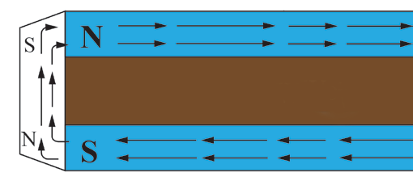
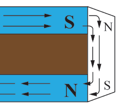

The magnet is placed in an east-west direction so that it is not left with any magnetism due to the induction in the Earth’s magnetic field.When this bar is brought near some iron filings, it does not attract them.This proves that a bar magnet has been demagnetised.
Storage of magnets
Magnets become weaker with time because free poles near the ends repel each other and upset the alignment of the tiny magnets.Magnets gradually lose strength over time because the free poles at their ends repel one another.This upsets the alignment of the small magnetic domains inside the magnet.Likewise, various external factors can contribute to a magnet losing its magnetism.Therefore, it is important to store magnets properly to ensure they stay effective for a longer period.
In order to maintain the magnetism in magnets for a long period, the following practices have to be observed:
1. Avoid storing magnets in places where they may come into contact with ferrous objects, such as steel shelves and tools.
2. Store magnets in pairs with the unlike poles facing each other.Pieces of magnetic keepers are used at the ends to preserve the strength of the magnets.Note: A magnetic keeper is a ferromagnetic bar placed across the poles of a permanent magnet.It preserves the strength of the magnet by completing the magnetic loop as shown in Figure 3.25.
Magnet
Keeper

Wood

Figure 3.25: Magnetic keeper
3. Do not overheat magnets.This may cause harmful structural changes in the magnet.